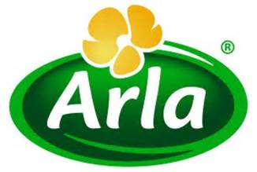
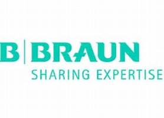
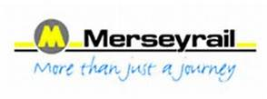
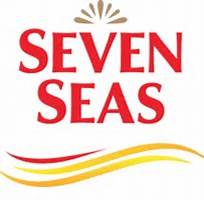

I work across organisations and sectors in both the UK, Europe and further afield. I cover many aspects that make up the People agenda. My work can be short term, tackling a particular issue or initiative or longer term responding to a complex requirement or task.
Services
Consultancy Services
offering practical advice, guidance and help in a variety of fields across all leadership, HR and management practices
Interim Assignments
short to medium term assignments covering senior HR roles in organisations where a need has emerged
Bidding and Tendering
Working with Government ‘Invitations to Tender’ for long term contracts setting out how to transform businesses and the people agenda over 8-20 year timeframes
We can offer help and assistance in a variety of ways:
- a full, hands on service,
- advice where it is needed
- a toolbox full of techniques
Capabilities
Approach
There are times when companies know exactly what to do and when to do it and times when they don’t. Sometimes they have the expertise in house and sometimes they need that bit of extra help for the team or the organisation.
As a hands-on strategist, I’m happy to roll my sleeves up to help. I believe it is critical to have a well thought through plan and some practical solutions but crucially, there is a need to move on and implement the plan as soon as possible.
Friendly and approachable, I employ a high work ethic, good communication skills, and work in collaboration. Ultimately, getting things done in the right way, is what it’s all about for me.
About
I have extensive experience as a Senior Board member operating across various sectors including FTSE 250 companies.
- Northern Rail Limited – HR and Change Director
- IDM Limited – Managing Director
- Arla Foods plc – Group HR Director
- Express Dairies plc – Group HR Director
- Caradon Catnic Limited – HR Director
- Caradon Stelrad Limited – Head of HR Europe
I hold a Masters Degree in Human Resources Management as well as a Financial Times Diploma in Non-Executive Directorship.
My early career was in engineering, progressing through management into human resources.
I value: Knowing what works, delivering and taking pride in doing a great job.
Adrian Thompson Consulting was established in 2016 to work with an international client who was seeking to develop a long-term HR strategy to the year 2040. This included challenging and ambitious plans to establish a greenfield multi-billion-dollar transport system resourced and skilled accordingly.
The aim? To gradually replace a predominantly western expat workforce with nationals and to move towards a more diverse organisation.
From this initial inaugural assignment, a number of other HR projects, services and assignments have been undertaken across the UK, Europe and the Middle East with an emphasis on providing knowhow, the latest expertise and most importantly practical tools, insights and innovation to help clients to be creative and successful.
Latest projects
- People, Staffing and Organisation Work Stream Lead for significant rail bids across the UK
- Responding for clients to tenders for major contracts in Dubai, Qatar and Saudi Arabia
- Collaboration review, report and recommendations for major Scottish organisation
- Technical expertise and advice to a client in combating an entrenched UK industrial relations dispute
- Developing a leading UK Talent Strategy for large UK business with multi-site locations
-

- 
- 
-

- 
- 
What they say
Contact
Landline +44 (0) 1909 779892
Mobile: +44 (0) 7500 447398